Statement review sample: Digital twin starter kit: site-drawing / supplied-extraction A stratified random sample of 60 of 704 statements (seed 1029). Strata: attribute|2 (connection) 6/61, attribute|4 (identity) 8/94, attribute|5 (descriptive text) 1/1, identity|4 (identity) 9/102, relation|2 (connection) 36/446
Why this page exists. Everything this model says can be said as a plain
statement, and every statement points at where it came from: a box on a drawing sheet, a page of a report, a field of
a model. Checking a sample of statements against their sources turns “does this look right?” into a measured
error rate, and lets someone who knows the unit check it in plain language without reading JSON.
Two separate verdicts, never mixed. Matches its source : does the drawing box or report page say
this? Anyone can check that. True in the plant : is it actually so on the unit today? Only an operator, a
walkdown or live data can say, and only for a statement that matched its source (the second box stays locked until
the first says match ). The “machine” line, where shown, only proves the export says what the model
says, not that the model is right.
Reviewer Download the review sheet (CSV)
H in SYS-0 · 1 statement(s)
H belongs to tank MSS-XSS-140 (assigned by tracing the lines).
connection · st-6e483468a578
Source: drawing sheet 0, box [640, 257, 645, 270] (0-1000 scale), read as “H”
1. Matches its source? match mismatch unclear 2. True in the plant? (after a match) confirmed wrong unknown Note
MSBV 1407 in SYS-0 · 1 statement(s)
MSBV 1407 is a final element (valve).
identity · st-7c14ee05d993
Source: drawing sheet 0, box [639, 498, 656, 521] (0-1000 scale), read as “MSBV 1407”
1. Matches its source? match mismatch unclear 2. True in the plant? (after a match) confirmed wrong unknown Note
MSCV-XXX in SYS-0 · 1 statement(s)
MSCV-XXX and untagged valve S0-VL032 are joined by a line on the drawing (direction not shown).
connection · st-b22fde505337
Source: no source of its own (the model's source document: OPEN100-0, revision public, page 1)
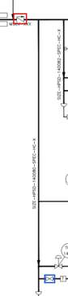
no source of its own: the line was traced, not read from a box. The crop shows both ends (red, blue) so you can follow it on the sheet
1. Matches its source? match mismatch unclear 2. True in the plant? (after a match) confirmed wrong unknown Note
MSV 1404 in SYS-0 · 1 statement(s)
MSV 1404 belongs to tank MSS-XSS-140 (assigned by tracing the lines).
connection · st-6c5931dfa7fc
Source: drawing sheet 0, box [647, 242, 663, 266] (0-1000 scale), read as “MSV 1404”
1. Matches its source? match mismatch unclear 2. True in the plant? (after a match) confirmed wrong unknown Note
PSV 1405 in SYS-0 · 1 statement(s)
PSV 1405 is an instrument.
identity · st-41733e76424d
Source: drawing sheet 0, box [463, 142, 479, 166] (0-1000 scale), read as “PSV 1405”
1. Matches its source? match mismatch unclear 2. True in the plant? (after a match) confirmed wrong unknown Note
PSV 1406 in SYS-0 · 1 statement(s)
PSV 1406 is an instrument.
identity · st-eb7742296f50
Source: drawing sheet 0, box [484, 142, 501, 166] (0-1000 scale), read as “PSV 1406”
1. Matches its source? match mismatch unclear 2. True in the plant? (after a match) confirmed wrong unknown Note
PSV 1407 in SYS-0 · 1 statement(s)
PSV 1407 is a final element (valve).
identity · st-077c35bcd8f4
Source: drawing sheet 0, box [506, 142, 522, 166] (0-1000 scale), read as “PSV 1407”
1. Matches its source? match mismatch unclear 2. True in the plant? (after a match) confirmed wrong unknown Note
PT 14086 in SYS-0 · 1 statement(s)
PT 14086 and untagged valve S0-VL013 are joined by a line on the drawing (direction not shown).
connection · st-82df631eca75
Source: no source of its own (the model's source document: OPEN100-0, revision public, page 1)
no source of its own: the line was traced, not read from a box. The crop shows both ends (red, blue) so you can follow it on the sheet
1. Matches its source? match mismatch unclear 2. True in the plant? (after a match) confirmed wrong unknown Note
PT 14087 in SYS-0 · 3 statement(s)
PT 14087 and untagged general S0-GN006 are joined by a line on the drawing (direction not shown).
connection · st-f03ecbaa38e8
Source: no source of its own (the model's source document: OPEN100-0, revision public, page 1)
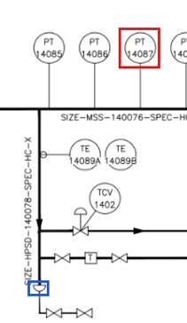
no source of its own: the line was traced, not read from a box. The crop shows both ends (red, blue) so you can follow it on the sheet
1. Matches its source? match mismatch unclear 2. True in the plant? (after a match) confirmed wrong unknown Note
PT 14087 and untagged valve S0-VL016 are joined by a line on the drawing (direction not shown).
connection · st-f45b59a2487f
Source: no source of its own (the model's source document: OPEN100-0, revision public, page 1)
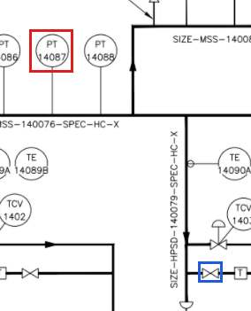
no source of its own: the line was traced, not read from a box. The crop shows both ends (red, blue) so you can follow it on the sheet
1. Matches its source? match mismatch unclear 2. True in the plant? (after a match) confirmed wrong unknown Note
PT 14087 measures pressure.
identity · st-53aeae404037
Source: drawing sheet 0, box [379, 223, 395, 247] (0-1000 scale), read as “PT 14087”
1. Matches its source? match mismatch unclear 2. True in the plant? (after a match) confirmed wrong unknown Note
PT 14088 in SYS-0 · 1 statement(s)
PT 14088 and untagged valve S0-VL011 are joined by a line on the drawing (direction not shown).
connection · st-16be682dc69d
Source: no source of its own (the model's source document: OPEN100-0, revision public, page 1)
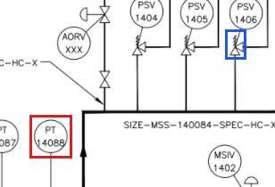
no source of its own: the line was traced, not read from a box. The crop shows both ends (red, blue) so you can follow it on the sheet
1. Matches its source? match mismatch unclear 2. True in the plant? (after a match) confirmed wrong unknown Note
RE 1403 in SYS-0 · 2 statement(s)
RE 1403 is an instrument.
identity · st-bdd07516e53a
Source: drawing sheet 0, box [516, 223, 531, 246] (0-1000 scale), read as “RE 1403”
1. Matches its source? match mismatch unclear 2. True in the plant? (after a match) confirmed wrong unknown Note
RE 1403 measures radiation.
identity · st-31f1e0056e51
Source: drawing sheet 0, box [516, 223, 531, 246] (0-1000 scale), read as “RE 1403”
1. Matches its source? match mismatch unclear 2. True in the plant? (after a match) confirmed wrong unknown Note
T (S0-GN008) in SYS-0 · 1 statement(s)
The tag T (S0-GN008) appears more than once on the drawing.
identity · st-98438a81293f
Source: drawing sheet 0, box [466, 373, 473, 384] (0-1000 scale), read as “T”
1. Matches its source? match mismatch unclear 2. True in the plant? (after a match) confirmed wrong unknown Note
T (S0-GN012) in SYS-0 · 1 statement(s)
T (S0-GN012) belongs to tank MSS-XSS-140 (assigned by tracing the lines).
connection · st-8b244ca792d6
Source: drawing sheet 0, box [606, 373, 613, 384] (0-1000 scale), read as “T”
1. Matches its source? match mismatch unclear 2. True in the plant? (after a match) confirmed wrong unknown Note
TCV 1402 in SYS-0 · 1 statement(s)
TCV 1402 is a valve in a temperature loop.
identity · st-70ca9eb2dbc2
Source: drawing sheet 0, box [363, 326, 378, 350] (0-1000 scale), read as “TCV 1402”
1. Matches its source? match mismatch unclear 2. True in the plant? (after a match) confirmed wrong unknown Note
TCV 1403 in SYS-0 · 1 statement(s)
TCV 1403 belongs to tank MSS-XSS-140 (assigned by tracing the lines).
connection · st-7c2eb17f5ee4
Source: drawing sheet 0, box [462, 328, 478, 352] (0-1000 scale), read as “TCV 1403”
1. Matches its source? match mismatch unclear 2. True in the plant? (after a match) confirmed wrong unknown Note
TCV 1406 in SYS-0 · 1 statement(s)
TCV 1406 is an instrument.
identity · st-fcc7294bed53
Source: drawing sheet 0, box [603, 332, 619, 355] (0-1000 scale), read as “TCV 1406”
1. Matches its source? match mismatch unclear 2. True in the plant? (after a match) confirmed wrong unknown Note
TCV 1408 in SYS-0 · 1 statement(s)
TCV 1408 belongs to tank MSS-XSS-140 (assigned by tracing the lines).
connection · st-aa132bce9164
Source: drawing sheet 0, box [618, 541, 633, 564] (0-1000 scale), read as “TCV 1408”
1. Matches its source? match mismatch unclear 2. True in the plant? (after a match) confirmed wrong unknown Note
TE 14084B in SYS-0 · 1 statement(s)
TE 14084B is an instrument.
identity · st-cc666bc04ec2
Source: drawing sheet 0, box [247, 327, 262, 350] (0-1000 scale), read as “TE 14084B”
1. Matches its source? match mismatch unclear 2. True in the plant? (after a match) confirmed wrong unknown Note
TE 14089A in SYS-0 · 1 statement(s)
TE 14089A is drawn attached to untagged valve S0-VL002.
connection · st-0ec4424da2a9
Source: drawing sheet 0, box [354, 296, 370, 320] (0-1000 scale), read as “TE 14089A”
1. Matches its source? match mismatch unclear 2. True in the plant? (after a match) confirmed wrong unknown Note
TE 14091A in SYS-0 · 2 statement(s)
TE 14091A and untagged valve S0-VL022 are joined by a line on the drawing (direction not shown).
connection · st-0b7b8c3d895d
Source: no source of its own (the model's source document: OPEN100-0, revision public, page 1)
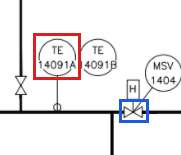
no source of its own: the line was traced, not read from a box. The crop shows both ends (red, blue) so you can follow it on the sheet
1. Matches its source? match mismatch unclear 2. True in the plant? (after a match) confirmed wrong unknown Note
TE 14091A measures temperature.
identity · st-c613444d1c54
Source: drawing sheet 0, box [606, 233, 622, 256] (0-1000 scale), read as “TE 14091A”
1. Matches its source? match mismatch unclear 2. True in the plant? (after a match) confirmed wrong unknown Note
TE 14092A in SYS-0 · 1 statement(s)
TE 14092A and untagged valve S0-VL025 are joined by a line on the drawing (direction not shown).
connection · st-057cba247420
Source: no source of its own (the model's source document: OPEN100-0, revision public, page 1)
no source of its own: the line was traced, not read from a box. The crop shows both ends (red, blue) so you can follow it on the sheet
1. Matches its source? match mismatch unclear 2. True in the plant? (after a match) confirmed wrong unknown Note
off-page connector “HIGH PRESSURE STEAM DRAINS HPD PID 190-1” (S0-OP007) in SYS-0 · 1 statement(s)
Off-page connector “HIGH PRESSURE STEAM DRAINS HPD PID 190-1” (S0-OP007) continues on drawing 190-1.
connection · st-57f5e7aa1451
Source: drawing sheet 0, box [767, 687, 838, 710] (0-1000 scale), read as “HIGH PRESSURE STEAM DRAINS HPD PID 190-1”
1. Matches its source? match mismatch unclear 2. True in the plant? (after a match) confirmed wrong unknown Note
off-page connector “HIGH PRESSURE STEAM DRAINS HPD PID 190-1” (S0-OP009) in SYS-0 · 1 statement(s)
Off-page connector “HIGH PRESSURE STEAM DRAINS HPD PID 190-1” (S0-OP009) belongs to tank MSS-XSS-140 (assigned by tracing the lines).
connection · st-095b82e97097
Source: drawing sheet 0, box [767, 808, 838, 831] (0-1000 scale), read as “HIGH PRESSURE STEAM DRAINS HPD PID 190-1”
1. Matches its source? match mismatch unclear 2. True in the plant? (after a match) confirmed wrong unknown Note
off-page connector “MAIN STEAM BY-PASS” (S0-OP005) in SYS-0 · 2 statement(s)
Off-page connector “MAIN STEAM BY-PASS” (S0-OP005) belongs to tank MSS-XSS-140 (assigned by tracing the lines).
connection · st-22f133dfecad
Source: drawing sheet 0, box [767, 526, 838, 549] (0-1000 scale), read as “MAIN STEAM BY-PASS”
1. Matches its source? match mismatch unclear 2. True in the plant? (after a match) confirmed wrong unknown Note
Off-page connector “MAIN STEAM BY-PASS” (S0-OP005) is in system SYS-0.
connection · st-803c54ee88dc
Source: drawing sheet 0, box [767, 526, 838, 549] (0-1000 scale), read as “MAIN STEAM BY-PASS”
1. Matches its source? match mismatch unclear 2. True in the plant? (after a match) confirmed wrong unknown Note
off-page connector “TBS PID 240-1 TURBINE SYSTEM” (S0-OP003) in SYS-0 · 2 statement(s)
Off-page connector “TBS PID 240-1 TURBINE SYSTEM” (S0-OP003) and untagged valve S0-VL031 are joined by a line on the drawing (direction not shown).
connection · st-c12366d5cb91
Source: no source of its own (the model's source document: OPEN100-0, revision public, page 1)
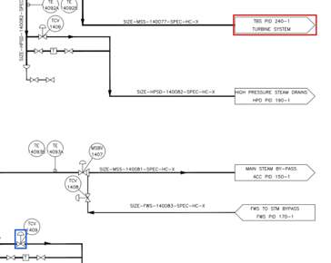
no source of its own: the line was traced, not read from a box. The crop shows both ends (red, blue) so you can follow it on the sheet
1. Matches its source? match mismatch unclear 2. True in the plant? (after a match) confirmed wrong unknown Note
There is an off-page connector reading “TBS PID 240-1 TURBINE SYSTEM” (S0-OP003): the line continues on another drawing.
identity · st-5f79c54f4985
Source: drawing sheet 0, box [768, 333, 838, 356] (0-1000 scale), read as “TBS PID 240-1 TURBINE SYSTEM”
1. Matches its source? match mismatch unclear 2. True in the plant? (after a match) confirmed wrong unknown Note
untagged general S0-GN004 in SYS-0 · 2 statement(s)
Untagged general S0-GN004 and untagged valve S0-VL010 are joined by a line on the drawing (direction not shown).
connection · st-ad1453c5be51
Source: no source of its own (the model's source document: OPEN100-0, revision public, page 1)
no source of its own: the line was traced, not read from a box. The crop shows both ends (red, blue) so you can follow it on the sheet
1. Matches its source? match mismatch unclear 2. True in the plant? (after a match) confirmed wrong unknown Note
Untagged general S0-GN004 belongs to tank MSS-XSS-140 (assigned by tracing the lines).
connection · st-3ae8130220d5
Source: drawing sheet 0, box [302, 266, 318, 287] (0-1000 scale)
1. Matches its source? match mismatch unclear 2. True in the plant? (after a match) confirmed wrong unknown Note
untagged general S0-GN013 in SYS-0 · 1 statement(s)
Untagged general S0-GN013 and untagged valve S0-VL027 are joined by a line on the drawing (direction not shown).
connection · st-6e04a550fe64
Source: no source of its own (the model's source document: OPEN100-0, revision public, page 1)
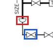
no source of its own: the line was traced, not read from a box. The crop shows both ends (red, blue) so you can follow it on the sheet
1. Matches its source? match mismatch unclear 2. True in the plant? (after a match) confirmed wrong unknown Note
untagged general S0-GN018 in SYS-0 · 1 statement(s)
Untagged general S0-GN018 is an item drawn on a line.
identity · st-d82c4ba682e8
Source: drawing sheet 0, box [558, 666, 565, 673] (0-1000 scale)
1. Matches its source? match mismatch unclear 2. True in the plant? (after a match) confirmed wrong unknown Note
untagged valve S0-VL003 in SYS-0 · 1 statement(s)
Untagged valve S0-VL003 and untagged valve S0-VL016 are joined by a line on the drawing (direction not shown).
connection · st-fafef2411d5d
Source: no source of its own (the model's source document: OPEN100-0, revision public, page 1)
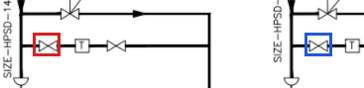
no source of its own: the line was traced, not read from a box. The crop shows both ends (red, blue) so you can follow it on the sheet
1. Matches its source? match mismatch unclear 2. True in the plant? (after a match) confirmed wrong unknown Note
untagged valve S0-VL006 in SYS-0 · 1 statement(s)
Untagged valve S0-VL006 belongs to tank MSS-XSS-140 (assigned by tracing the lines).
connection · st-f5a728e4d1ff
Source: drawing sheet 0, box [357, 411, 366, 421] (0-1000 scale)
1. Matches its source? match mismatch unclear 2. True in the plant? (after a match) confirmed wrong unknown Note
untagged valve S0-VL009 in SYS-0 · 2 statement(s)
Untagged valve S0-VL009 and untagged valve S0-VL013 are joined by a line on the drawing (direction not shown).
connection · st-ad7967956ad1
Source: no source of its own (the model's source document: OPEN100-0, revision public, page 1)
no source of its own: the line was traced, not read from a box. The crop shows both ends (red, blue) so you can follow it on the sheet
1. Matches its source? match mismatch unclear 2. True in the plant? (after a match) confirmed wrong unknown Note
Untagged valve S0-VL009 and untagged valve S0-VL016 are joined by a line on the drawing (direction not shown).
connection · st-3b5cea69586a
Source: no source of its own (the model's source document: OPEN100-0, revision public, page 1)
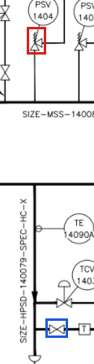
no source of its own: the line was traced, not read from a box. The crop shows both ends (red, blue) so you can follow it on the sheet
1. Matches its source? match mismatch unclear 2. True in the plant? (after a match) confirmed wrong unknown Note
untagged valve S0-VL010 in SYS-0 · 3 statement(s)
Untagged valve S0-VL010 and PSV 1405 are joined by a line on the drawing (direction not shown).
connection · st-e66a5c4c6242
Source: no source of its own (the model's source document: OPEN100-0, revision public, page 1)
no source of its own: the line was traced, not read from a box. The crop shows both ends (red, blue) so you can follow it on the sheet
1. Matches its source? match mismatch unclear 2. True in the plant? (after a match) confirmed wrong unknown Note
Untagged valve S0-VL010 and untagged general S0-GN009 are joined by a line on the drawing (direction not shown).
connection · st-03d0af69ecb3
Source: no source of its own (the model's source document: OPEN100-0, revision public, page 1)
no source of its own: the line was traced, not read from a box. The crop shows both ends (red, blue) so you can follow it on the sheet
1. Matches its source? match mismatch unclear 2. True in the plant? (after a match) confirmed wrong unknown Note
Untagged valve S0-VL010 and untagged valve S0-VL012 are joined by a line on the drawing (direction not shown).
connection · st-17aa6bdfe05c
Source: no source of its own (the model's source document: OPEN100-0, revision public, page 1)
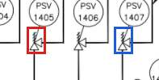
no source of its own: the line was traced, not read from a box. The crop shows both ends (red, blue) so you can follow it on the sheet
1. Matches its source? match mismatch unclear 2. True in the plant? (after a match) confirmed wrong unknown Note
untagged valve S0-VL011 in SYS-0 · 1 statement(s)
Untagged valve S0-VL011 and untagged valve S0-VL016 are joined by a line on the drawing (direction not shown).
connection · st-19c8156d3d9b
Source: no source of its own (the model's source document: OPEN100-0, revision public, page 1)
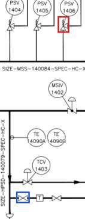
no source of its own: the line was traced, not read from a box. The crop shows both ends (red, blue) so you can follow it on the sheet
1. Matches its source? match mismatch unclear 2. True in the plant? (after a match) confirmed wrong unknown Note
untagged valve S0-VL012 in SYS-0 · 1 statement(s)
Untagged valve S0-VL012 belongs to tank MSS-XSS-140 (assigned by tracing the lines).
connection · st-1a900530a99a
Source: drawing sheet 0, box [506, 168, 513, 183] (0-1000 scale)
1. Matches its source? match mismatch unclear 2. True in the plant? (after a match) confirmed wrong unknown Note
untagged valve S0-VL013 in SYS-0 · 1 statement(s)
Untagged valve S0-VL013 and MSCV-XXX are joined by a line on the drawing (direction not shown).
connection · st-27491cff2bd0
Source: no source of its own (the model's source document: OPEN100-0, revision public, page 1)
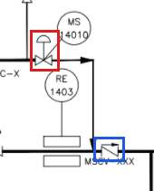
no source of its own: the line was traced, not read from a box. The crop shows both ends (red, blue) so you can follow it on the sheet
1. Matches its source? match mismatch unclear 2. True in the plant? (after a match) confirmed wrong unknown Note
untagged valve S0-VL014 in SYS-0 · 3 statement(s)
Untagged valve S0-VL014 and untagged general S0-GN007 are joined by a line on the drawing (direction not shown).
connection · st-e52e34761d56
Source: no source of its own (the model's source document: OPEN100-0, revision public, page 1)
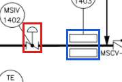
no source of its own: the line was traced, not read from a box. The crop shows both ends (red, blue) so you can follow it on the sheet
1. Matches its source? match mismatch unclear 2. True in the plant? (after a match) confirmed wrong unknown Note
Untagged valve S0-VL014 and untagged general S0-GN009 are joined by a line on the drawing (direction not shown).
connection · st-8d0dc063182a
Source: no source of its own (the model's source document: OPEN100-0, revision public, page 1)
no source of its own: the line was traced, not read from a box. The crop shows both ends (red, blue) so you can follow it on the sheet
1. Matches its source? match mismatch unclear 2. True in the plant? (after a match) confirmed wrong unknown Note
Untagged valve S0-VL014 and untagged valve S0-VL016 are joined by a line on the drawing (direction not shown).
connection · st-de592713b312
Source: no source of its own (the model's source document: OPEN100-0, revision public, page 1)
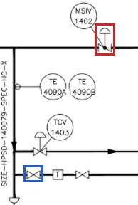
no source of its own: the line was traced, not read from a box. The crop shows both ends (red, blue) so you can follow it on the sheet
1. Matches its source? match mismatch unclear 2. True in the plant? (after a match) confirmed wrong unknown Note
untagged valve S0-VL016 in SYS-0 · 1 statement(s)
Untagged valve S0-VL016 and T (S0-GN008) are joined by a line on the drawing (direction not shown).
connection · st-9c473cfc4498
Source: no source of its own (the model's source document: OPEN100-0, revision public, page 1)
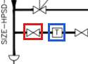
no source of its own: the line was traced, not read from a box. The crop shows both ends (red, blue) so you can follow it on the sheet
1. Matches its source? match mismatch unclear 2. True in the plant? (after a match) confirmed wrong unknown Note
untagged valve S0-VL018 in SYS-0 · 1 statement(s)
Untagged valve S0-VL018 belongs to tank MSS-XSS-140 (assigned by tracing the lines).
connection · st-0ce31929a199
Source: drawing sheet 0, box [448, 411, 457, 421] (0-1000 scale)
1. Matches its source? match mismatch unclear 2. True in the plant? (after a match) confirmed wrong unknown Note
untagged valve S0-VL021 in SYS-0 · 1 statement(s)
Untagged valve S0-VL021 and TE 14093A are joined by a line on the drawing (direction not shown).
connection · st-b027e07bea7b
Source: no source of its own (the model's source document: OPEN100-0, revision public, page 1)
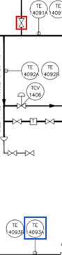
no source of its own: the line was traced, not read from a box. The crop shows both ends (red, blue) so you can follow it on the sheet
1. Matches its source? match mismatch unclear 2. True in the plant? (after a match) confirmed wrong unknown Note
untagged valve S0-VL022 in SYS-0 · 2 statement(s)
Untagged valve S0-VL022 and untagged valve S0-VL025 are joined by a line on the drawing (direction not shown).
connection · st-372e71a3302e
Source: no source of its own (the model's source document: OPEN100-0, revision public, page 1)
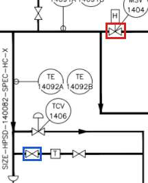
no source of its own: the line was traced, not read from a box. The crop shows both ends (red, blue) so you can follow it on the sheet
1. Matches its source? match mismatch unclear 2. True in the plant? (after a match) confirmed wrong unknown Note
Untagged valve S0-VL022 and untagged valve S0-VL032 are joined by a line on the drawing (direction not shown).
connection · st-922504305fbe
Source: no source of its own (the model's source document: OPEN100-0, revision public, page 1)
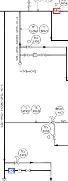
no source of its own: the line was traced, not read from a box. The crop shows both ends (red, blue) so you can follow it on the sheet
1. Matches its source? match mismatch unclear 2. True in the plant? (after a match) confirmed wrong unknown Note
untagged valve S0-VL023 in SYS-0 · 1 statement(s)
Untagged valve S0-VL023 and M are joined by a line on the drawing (direction not shown).
connection · st-402efb646274
Source: no source of its own (the model's source document: OPEN100-0, revision public, page 1)
no source of its own: the line was traced, not read from a box. The crop shows both ends (red, blue) so you can follow it on the sheet
1. Matches its source? match mismatch unclear 2. True in the plant? (after a match) confirmed wrong unknown Note
untagged valve S0-VL024 in SYS-0 · 1 statement(s)
Untagged valve S0-VL024 belongs to tank MSS-XSS-140 (assigned by tracing the lines).
connection · st-1b38afc721b4
Source: drawing sheet 0, box [596, 343, 604, 364] (0-1000 scale)
1. Matches its source? match mismatch unclear 2. True in the plant? (after a match) confirmed wrong unknown Note
untagged valve S0-VL025 in SYS-0 · 2 statement(s)
Untagged valve S0-VL025 and untagged valve S0-VL032 are joined by a line on the drawing (direction not shown).
connection · st-49cddb126ad0
Source: no source of its own (the model's source document: OPEN100-0, revision public, page 1)
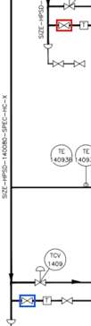
no source of its own: the line was traced, not read from a box. The crop shows both ends (red, blue) so you can follow it on the sheet
1. Matches its source? match mismatch unclear 2. True in the plant? (after a match) confirmed wrong unknown Note
Untagged valve S0-VL025 is a valve.
identity · st-f11eecd01df5
Source: drawing sheet 0, box [592, 375, 600, 383] (0-1000 scale)
1. Matches its source? match mismatch unclear 2. True in the plant? (after a match) confirmed wrong unknown Note
untagged valve S0-VL026 in SYS-0 · 1 statement(s)
Untagged valve S0-VL026 is an item drawn on a line.
identity · st-171c9b35551d
Source: drawing sheet 0, box [618, 375, 627, 383] (0-1000 scale)
1. Matches its source? match mismatch unclear 2. True in the plant? (after a match) confirmed wrong unknown Note
untagged valve S0-VL035 in SYS-0 · 1 statement(s)
Untagged valve S0-VL035 is an item drawn on a line.
identity · st-d2a6554410c8
Source: drawing sheet 0, box [578, 682, 586, 691] (0-1000 scale)
1. Matches its source? match mismatch unclear 2. True in the plant? (after a match) confirmed wrong unknown Note
SYS-0 in the plant · 1 statement(s)
SYS-0 is described as “Public example: PID2Graph OPEN100 sheet 0 (CC BY-SA 4.0)”.
descriptive text · st-77363a88b51c
Source: no source of its own (the model's source document: OPEN100-0, revision public, page 1)
1. Matches its source? match mismatch unclear 2. True in the plant? (after a match) confirmed wrong unknown Note